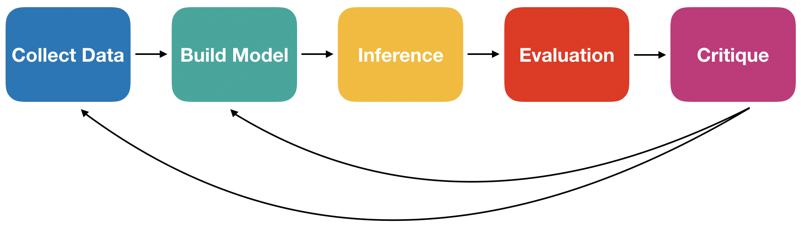
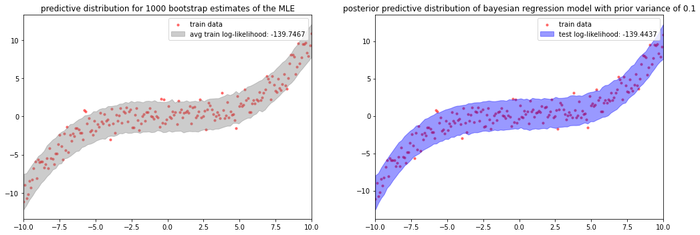
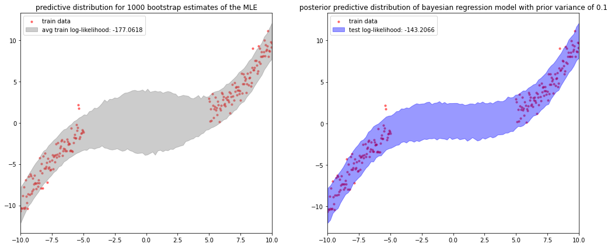
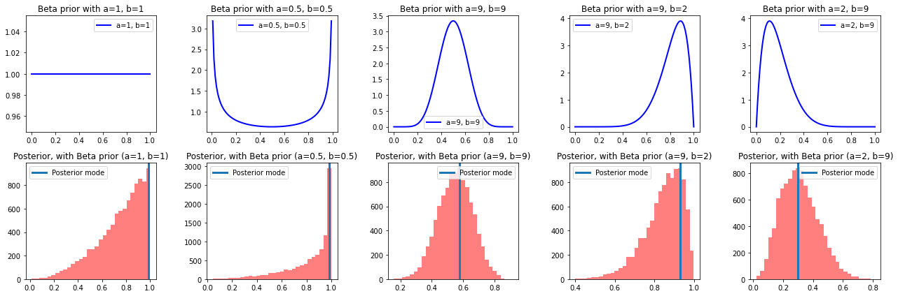
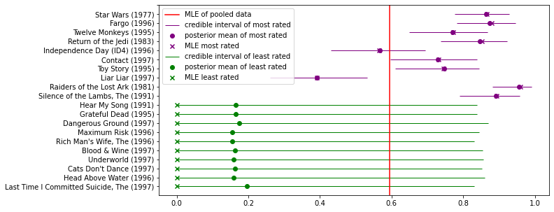
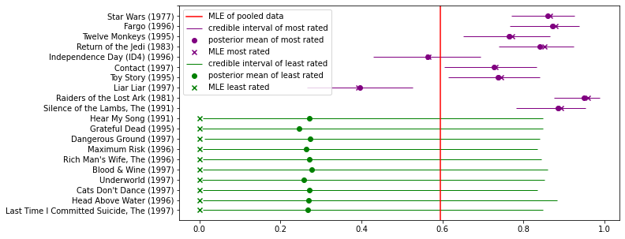
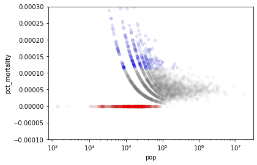
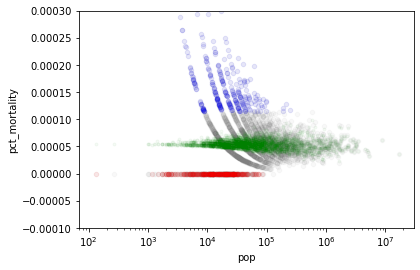
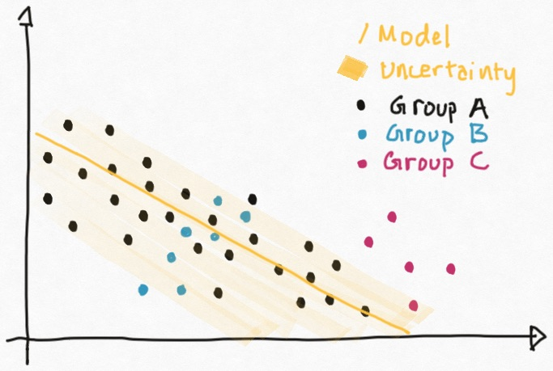

13. Hierarchical Models#
This chapter is adapted from AM207 (Harvard, Fall 2021). Watch the recorded lecture.
In this chapter
Review of Statistical Modeling
Motivation for Hierarchical Models
Hierarchical Models and Empirical Bayes
13.1. Review of Statistical Modeling#
What We Can Do So Far: Models#
(Likelihood Models with Observed Variables) When we have observed data \(Y_{\text{Obs}}\), we can model \(Y_{\text{Obs}}\) as a random variable \(Y_{\text{Obs}} \sim p(Y |\theta)\) with a known distribution \(p\).
if \(Y_{\text{Obs}}\) is a label, we can model it as a Categorical or Bernoulli variable
if \(Y_{\text{Obs}}\) is a count, we can model it as a Binomial, Multinomial or Poisson
if \(Y_{\text{Obs}}\) is continuous, we can model it as a Gaussian, Exponential, Dirichlet etc
(Likelihood Models with Latent Variables) When we also have unobserved data \(Z_{\text{Latent}}\), we can model \(Z_{\text{Latent}}\) and \(Y_{\text{Obs}}\) jointly \(p(Y_{\text{Obs}}, Z_{\text{Latent}}| \theta)\).
(Bayesian Models) When we are being Bayesian, we assume a prior for \(\theta\), encoding our knowledge and uncertainty about \(\theta\). We model parameters and data jointly \(p(Y_{\text{Obs}}, \theta)\) or \(p(Y_{\text{Obs}}, Z_{\text{Latent}}, \theta)\).
What We Can Do So Far: Inference#
We can make statements about \(\theta\) by performing:
I. Maximum Likelihood Estimation: for likelihood models, we compute a fixed value \(\theta_{\text{MLE}}\) that maximizes the likelihood of the observed data \(Y\).
II. Bayesian Inference: for Bayesian models, we compute the posterior distribution \(p(\theta| Y)\).
We choose an inference algorithm or method to perform inference:
I. Maximum Likelihood Estimation:
A. For models with observed variables, we analytically solve an unconstrained or contrained optimization problem to obtain \(\theta_{\text{MLE}}\).
B. For latent variable models, we use expectation maximization to approximately find \(\theta_{\text{MLE}}\).
II. Bayesian Inference:
A. If the prior and likelihood are conjugate, analytically derive the posterior distribution
B. If the posterior distribution does not have a known form, sample from it using a sampler.
C. If the posterior distribution does not have a known form, approximate it using variational inference.
What Can We Not Do?#
1. (Regression Models) We don’t have any models where some observed variables \(Y_{\text{Obs}}\) depend on other observed variables \(X_{\text{Obs}}\), i.e. none of our models have covariates that we condition on.
2. (Gradient Descent Methods) Analytically optimizing the log-likelihood is not always possible, and when possible it is extremely annoying to do by hand. Can we find a way to black-box optimize any objective function?
3. (Hamiltonian Monte Carlo) MCMC samplers can be extremely inefficient in high-dimensions where the samplers struggle to find area of high mass in the target distribution. Can we build a proposal distribution with an indicator of where the target distribution mass is located?
4. (Black-box Variational Inference etc) Variational inference sounds like a great idea but maximizing the ELBO using coordinate ascent is an artisenal process that requires a massive amount of derivations per model. Can we find an algorithm to compute/estimate the gradient of the ELBO that is model independent? Can we perform black-box variational inference?
What Happens After Inference?#
(Predictive Evaluation) In practice, we do not know the true model \(\theta_{\text{True}}\)! Thus, \(\theta_{\text{MLE}}\) and \(p(\theta|Y)\) cannot be evaluated by comparison to \(\theta_{\text{True}}\).
Maximimum Likelihood Estimation: we compute \(\theta_{\text{MLE}}\) on multiple bootstrap samples of the data; for each \(\theta_{\text{MLE}}\) we sample \(Y \sim p(Y| \theta_{\text{MLE}})\). We compare these samples with observed data \(Y_{\text{Obs}}\).
Bayesian Inference: we sample \(\theta\)’s from the posterior, for each \(\theta\sim p(\theta |Y_{\text{Obs}})\) we sample \(Y \sim p(Y| \theta)\). We compare these posterior predictive samples with the observed data \(Y_{\text{Obs}}\).
(Uncertainty Evaluation) Before making decisions with real-life consequence based on your model, you should check the precision of your estimate or uncertainty of you model.
Maximimum Likelihood Estimation: repeat the MLE computation on many bootstrap samples of \(Y_{\text{Obs}}\). Compute the confidence interval of \(\theta\) and the predictive interval for \(Y\). These intervals indicate precision.
Bayesian Inference: Compute credible intervals for the posterior \(p(\theta|Y)\) and the predictive intervals of the posterior predictive. These intervals indicate model uncertainty.
The Modeling Process#


Evaluating the Predictive Distributions#
How well does the predictive distribution of bootstrapped MLE models or the posterior predictive of a Bayesian model capture the actual observed data?
We cannot, in general, perform visual chekcks (i.e. plot the predictive and the data). To quantify how well a predictive distribution aligns with the actual data we can compute:
The KL-divergence between actual data (empirical distirbution) and our predictive distribution.
The log-likelihood of the actual data.
A. For MLE models: we can compute \(\log p(Y^{\text{Obs}}| \theta_{\text{MLE}})\) for each bootstrap \(\theta_{\text{MLE}}\) and then average the log-likelihood over the number of bootstraps. If there are multiple observations, we would sum the individual log-likelihoods at the end.
B. For Bayesian models: we evaluate the log-likelihood, i.e the likelihood of the observed data under the posterior predictive,
Interpreting the Data Log-Likelihood#
fig, ax = plt.subplots(1, 2, figsize=(15, 5))
prior_var = 0.1
ax = mle_vs_bayesian(x_2, y_2, ax, prior_var=prior_var)
plt.tight_layout()
plt.show()

Evaluating and Quantifying Uncertainty#
How do we know our model uncertainties (confidence intervals, credible intervals, predcitive intervals, posterior predictive intervals) are any good? What information about the data/model do we want our uncertainties to capture?
Epistemic Uncertainty: uncertainty due to small number of samples across all scenarios. This can be reduced by more samples!
Aleatoric Uncertainty: uncertainty due to the underlying randomness of the data generation process. This cannot be reduced no matter what.
Can we use log-likelihood of as a metric for the quality of predictive uncertainty?
fig, ax = plt.subplots(1, 2, figsize=(15, 6))
ax = mle_vs_bayesian(x_1, y_1, ax, prior_var=prior_var)
plt.tight_layout()
plt.show()

13.2. Motivation for Hierarchical Models#
A Binomial Model for Movie Rankings#
We model the number of likes \(Y_n\) received by the \(n\)-th movie as a binomial variable \(Y_n | \theta_n\sim Bin(R_n, \theta_n)\), where \(R_n\) is the number of times the \(n\)-th movies was rated and \(\theta_n\) is the “likeability” of the movie.
| user_id | movie_id | rating | |
|---|---|---|---|
| 0 | 22.0 | 377.0 | 0.0 |
| 1 | 62.0 | 257.0 | 0.0 |
| 2 | 95.0 | 546.0 | 0.0 |
| 3 | 38.0 | 95.0 | 1.0 |
| 4 | 63.0 | 277.0 | 1.0 |
| movie_id | movie_name | release_date | Unnamed: 3 | link | Unnamed: 5 | Unnamed: 6 | Unnamed: 7 | Unnamed: 8 | Unnamed: 9 | ... | Unnamed: 15 | Unnamed: 16 | Unnamed: 17 | Unnamed: 18 | Unnamed: 19 | Unnamed: 20 | Unnamed: 21 | Unnamed: 22 | Unnamed: 23 | Unnamed: 24 | |
|---|---|---|---|---|---|---|---|---|---|---|---|---|---|---|---|---|---|---|---|---|---|
| 0 | 1 | Toy Story (1995) | 01-Jan-1995 | NaN | http://us.imdb.com/M/title-exact?Toy%20Story%2... | 0 | 0 | 0 | 1 | 1 | ... | 0 | 0 | 0 | 0 | 0 | 0 | 0 | 0 | 0 | NaN |
| 1 | 2 | GoldenEye (1995) | 01-Jan-1995 | NaN | http://us.imdb.com/M/title-exact?GoldenEye%20(... | 0 | 1 | 1 | 0 | 0 | ... | 0 | 0 | 0 | 0 | 0 | 0 | 1 | 0 | 0 | NaN |
| 2 | 3 | Four Rooms (1995) | 01-Jan-1995 | NaN | http://us.imdb.com/M/title-exact?Four%20Rooms%... | 0 | 0 | 0 | 0 | 0 | ... | 0 | 0 | 0 | 0 | 0 | 0 | 1 | 0 | 0 | NaN |
| 3 | 4 | Get Shorty (1995) | 01-Jan-1995 | NaN | http://us.imdb.com/M/title-exact?Get%20Shorty%... | 0 | 1 | 0 | 0 | 0 | ... | 0 | 0 | 0 | 0 | 0 | 0 | 0 | 0 | 0 | NaN |
| 4 | 5 | Copycat (1995) | 01-Jan-1995 | NaN | http://us.imdb.com/M/title-exact?Copycat%20(1995) | 0 | 0 | 0 | 0 | 0 | ... | 0 | 0 | 0 | 0 | 0 | 0 | 1 | 0 | 0 | NaN |
5 rows × 25 columns
#Print results of ranking
print('Top 10 Movies')
print('****************************')
for movie, likes, total_ratings, likable in top_movies:
print (movie, ':', likable, '({}/{})'.format(likes, total_ratings))
Top 10 Movies
****************************
French Twist (Gazon maudit) (1995) : 1.0 (2.0/2.0)
Exotica (1994) : 1.0 (2.0/2.0)
Three Colors: Red (1994) : 1.0 (12.0/12.0)
Three Colors: White (1994) : 1.0 (8.0/8.0)
Shawshank Redemption, The (1994) : 1.0 (39.0/39.0)
Brother Minister: The Assassination of Malcolm X (1994) : 1.0 (1.0/1.0)
Carlito's Way (1993) : 1.0 (4.0/4.0)
Robert A. Heinlein's The Puppet Masters (1994) : 1.0 (2.0/2.0)
Horseman on the Roof, The (Hussard sur le toit, Le) (1995) : 1.0 (2.0/2.0)
Wallace & Gromit: The Best of Aardman Animation (1996) : 1.0 (6.0/6.0)
A Beta-Binomial Model for Movie Rankings#
We model the number of likes \(Y_n\) received by the \(n\)-th movie as a binomial variable \(Y_n | \theta_n\sim Bin(R_n, \theta_n)\), we model our prior beliefs and uncertainty about \(\theta\) using a beta distribution \(\theta_n \sim Beta(\alpha, \beta)\).
print('{}: {} ({}/{})'.format(movie_name, likability, likes, total_ratings))
fig, ax = plt.subplots(2, n, figsize=(18, 6))
ax = plot_priors_with_posteriors(ax, beta_shapes, likes, total_ratings, samples)
plt.tight_layout()
plt.show()
French Twist (Gazon maudit) (1995): 1.0 (2.0/2.0)

Credible Intervals for Movies with the Most and the Least Number of Ratings#
fig, ax = plt.subplots(1, 1, figsize=(10, 5))
ax = plot_credible_intervals(a, b, ax)
plt.show()

Emprirical Bayes (ML-II) For the Beta-Binomial Model#
Since the prior has a significant impact on the posterior when the number of ratings is small, we want to choose a prior that is appropriate for the data.
Idea: choose the hyperparameters \(\alpha, \beta\) for the beta prior such that the expected likelihood of the data, over \(\theta_n \sim Beta(\alpha, \beta)\), is maximized:
where \(B\) is the beta function. The marginal likelihood of the data \(p(Y_1, \ldots, Y_N| a, b)\) is called evidence.
This method of choosing the hyperparameters of the prior based on the data is called empirical Bayes or type-II maximum likelihood.
Question: doens’t this violate the principle of choosing the prior independent of the data?
Method of Moments for Empirical Bayes (ML-II)#
Since each marginal \(p(Y_n| \alpha, \beta)\) is a Beta-Binomial distribution, we know its first two moments:
Now we can make the simplyfying approximations that the \(Y_n\)’s are iid data from the same binomial, i.e. all have the same moments as above. Then we can use empirical moments to approximate the theoretical moments and solve for \(\alpha, \beta\):
where \(\widehat{\mathbb{E}}\) is sample mean and \(\widehat{\text{Var}}\) is sample variance and \(\overline{R}_n\) is the average total number of ratings.
Empirical Bayes and Shrinkage#
Computing the hyperparameters \(\alpha, \beta\) of the beta prior on \(\theta\) from the data, allows the ratings rich movies to influence the prior of ratings poor movies, since all movies contribute to the empirical Bayes estimate.
As a result, the estimates from ratings poor movies tend to shrink towards the population mean more so than ratings rich movies.
fig, ax = plt.subplots(1, 1, figsize=(10, 5))
ax = plot_credible_intervals(alpha_eb, beta_eb, ax)
plt.show()

13.3. Hierarchical Models and Empirical Bayes#
A Hierarchical Model for Movie Rankings#
We model the number of likes \(Y_n\) received by the \(n\)-th movie as a binomial variable \(Y_n|\theta_n\sim Bin(R_n, \theta_n)\), we model our prior beliefs and uncertainty about \(\theta\) using a beta distribution \(\theta_n \sim Beta(\alpha, \beta)\); finally, we model our uncertainty about \(\alpha, \beta\) using uniform distributions \(\alpha, \beta\sim U(0.5, 100)\):
This is an example of a hierarchical model – a model with multiple layers of unknown variables.
There are overlaps between hierarchical models and latent variable models. Generally, we want the hiearchy in a hierarchical model to express scientifically meaningful conditional relationships. In latent variable models we want the latent variable to represent unknown aspects of the data rather than unknown parameters of our model.
Point Estimate Approximations of Inference in Hierachical Models (MAP-II)#
The posterior of the hierarchical model for movie ratings is \(p(\alpha, \beta, \theta_1, \ldots, \theta_N | Y_1, \ldots, Y_N)\), but since we know how \(\theta_n\) is conditioned on \(\alpha, \beta\), it is often easier to marginalize out \(\theta_n\) and work with \(p(\alpha, \beta |Y_1, \ldots, Y_N)\).
The central idea is that by infering the posterior \(p(\alpha, \beta |Y_1, \ldots, Y_N)\), \(\alpha\) and \(\beta\) are influenced by the entire data set and thus ratings poor movies can borrow statistical strength from ratings rich movies through the way \(\theta_n\) depends on \(\alpha, \beta\).
However, performing full Bayesian inference on hierarchical models can be difficult. Thus, we can make a point estimate approximation of \(p(\alpha, \beta |Y_1, \ldots, Y_N)\):
When we perform the usual Bayesian inference on \(p(Y_n|\theta_n)p(\theta_n|\alpha^*, \beta^*)\), this is called the type-II MAP method.
But when \(\alpha, \beta\) are uniform random varibles, the above becomes:
When we perform the usual Bayesian inference on \(p(Y_n|\theta_n)p(\theta_n|\alpha^*, \beta^*)\), this is just our empirical Bayes or type-II MLE method!
13.4. Summary#
The questions we ask today are “When should we be Bayesian? How Bayesian should we be?”
Consider the kidney cancer data set from the Chapter 9 problem set: We posit that the observed number of cases of kidney cancer, \(y_j\), for the \(j\)-th county (with total population \(n_j\)) is a Poisson random variable that depends on the true underlying cancer rate, \(\theta\):
(The MLE Model) Why not use MLE estimates of \(\theta\)? \( \theta_{\text{MLE}} = \frac{y_j}{n_j} \)


(The Bayesian Model) Why not use choose an arbitrary prior for \(\theta\) or choose a different prior per county?
(The Empirical Bayes Model) Why should we choose \(\alpha\), \(\beta\) using type-II MLE or empirical Bayes? Idea: choose the hyperparameters \(\alpha, \beta\) for the beta prior such that the evidence, is maximized:
(The Hierarchical Bayes Model) Why should we choose to use a hierarchical Bayes model?


(Broader Impact) Why should we care so much about which model to choose?
Which downstream decisions might be affected by the predictions of this model and how? So what if I underestimate cancer rates? So what if I overestimate?
Which counties are affected by the overfitting tendencies of MLE?
Which counties are affected by a poor choice of prior?
Who lives in these counties?
If your model negatively affects individual lives, would the negative effects be random or exacerbate systemic inequalities?
(The Small Data within Big Data Problem) The small data with big data problem is everywhere in machine learning. It might appear under names like “cohort imbalance”, “sampling bias”.
Health care: women, people of non-european descent, folks without insurance (and primary care) etc are extremely underrepresented
What can go wrong with modeling data with an underrepresented cohort?

Why can’t you just collect more data?

(Why Should Engineers and ML Researchers Care About Broader Impact?) Is it your responsibility as an engineer to care about broader impact? To what extent is this your responsibility?
If you’re just an engineer in a long ML pipeline in an industry setting, how much should you care about broader impact? Don’t company have a legal and ethics department that handles all that?
If you’re just a in-house attorney or social scientist at a tech company, what properties of MLE, Bayesian, Empirical Bayes and Hierarchical Bayes models should you know?
13.5. Exercises#
These problems were originally assigned as homework. Data files are in the book’s data/ folder.
Problem Set: Modeling Kidney Cancer Data#
In this problem, we will continue to work with the US Kidney Cancer Data set, kcancer.csv. This is a dataset of kidney cancer frequencies across the US over 5 years on a per county basis.
In this problem set, we focus on comparing different types of models for this data set.
Exercise: Part I: Empirical Bayes
Let \(N\) be the number of counties; let \(y_j\) the number of kidney cancer case for the \(j\)-th county, \(n_j\) the population of the \(j\)-county and \(\theta_j\) be the underlying kidney cancer rate for that county. The following is a Bayesian model for our data:
where \(\alpha, \beta\) are hyper-parameters of the model.
(Visualize the raw cancer rates) Produce a scatter plot of the raw cancer rates (pct mortality) vs the county population size (in log scale). Highlight the top 300 raw cancer rates in red. Highlight the bottom 300 raw cancer rates in blue. What can you say about the counties with the highest and lowest raw cancer rates.
(Empirical Bayes) Using Empirical Bayes and moment matching, choose values for the hyperparameters \(\alpha, \beta\) based on your data. Use these values of \(\alpha\) and \(\beta\) to obtain posterior distributions for each county.
Hint: You’ll first need to derive the fact that the evidence for a Poisson-Gamma model has a Negative Binomial distribution.
(Posterior Means) Produce a scatter plot of the raw cancer rates (pct mortality) vs the county population size (in log scale). Highlight the top 300 raw cancer rates in red. Highlight the bottom 300 raw cancer rates in blue. Finally, on the same plot again, scatter plot the posterior mean cancer rate estimates vs the county population size, highlight these means in green.
Using the scatter plot, explain why using the posterior means (from our model) to estimate cancer rates is preferable to studying the raw rates themselves.
Exercise: Part II: Hierarchical Bayes
Rather than choosing fixed constants for the hyperparameters \(\alpha, \beta\), following the Bayesian philosophy, we typically put additional priors on quantities of which we are uncertain. That is, we model the kidney cancer rates using a hierarchical model:
where \(a, b, c, d\) are hyperparameters.
(Posterior Marginal Means) Produce a scatter plot of the raw cancer rates (pct mortality) vs the county population size (in log scale). Highlight the top 300 raw cancer rates in red. Highlight the bottom 300 raw cancer rates in blue. Finally, on the same plot again, scatter plot the mean of the posterior marginal distribution over \(\theta_j\), i.e. \(p(\theta_j|y_1, \ldots, y_N)\), vs the county population size (in log scale), highlight these means in orange.
You should use pymc3 to sample from the posterior. Compare pymc3’s sampler with your sampler from the Chapter 9 problem set, what is the difference (if any) in the performance of these samplers?
(Hierarchical Bayes vs Empirical Bayes) Compare the shrinkage of the posterior marginal means of the hierarchical model to the shrinkage of the posterior means from the Bayesian model with empirical Bayes estimates for \(\alpha, \beta\). What is the difference in shrinkage between the full hierarchical model and the Bayesian model with empirical Bayes?
Exercise: Part III: Broader Impact Analysis
Starting in 2020, major machine learning conferences are beginning to ask authors as well as reviewers to explicitly consider the broader impact of new machine learning methods. To properly evaluate the potential good or harm that a piece of technology (AI or not) can do to the general public, we need to be aware that no technology is deployed in ideal conditions or in perfectly neutral contexts. In order to assess the potential broader impact of technology, we need to analyze the social systems/institutions of which these technologies will become a part.
To help you analyze the broader impact of your technology, begin by considering the following questions:
I. Identify the relevant socio-technical systems
In what social, political, economic system could the tech be deployed?
How would the tech be used in these systems (what role will it take in the decision making processes)?
II. Identify the stakeholders
Who are the users?
Who are the affected communities (are these the users)?
Hint: users are typically decision makers who will use the technology as decision aids (e.g. doctors), whereas affected communities may be folks who are impacted by these decisions but who are not represented in the decision making process (e.g. patients).
III. What types of harm can this tech do?
What kinds of failures can this tech have?
What kinds of direct harm can these failures cause?
What kinds of harm can the socio-technical system cause?
Hint: many technical innovations have niche applications, they may sit in a long chain of decision making in a complex system. As such, it may seem, at first glance, that these technologies have no immediate real-life impact. In these cases, it’s helpful to think about the impact of the entire system and then think about how the proposed innovations aid, hamper or change the goals or outcomes of this system.
IV. What types of good can this tech do?
What kinds of needs do these users/communities have?
What kinds of constraints do these users/communities have?
(Computational Footprint) In the Chapter 9 problem set, we considered the broader impact of the this hierarchical model for kidney cancer: we examined under what circumstances a hierachical model for kidney cancer is more preferable to a MLE model or a Bayesian model with hand-picked priors. In this problem, we compare hierarchical Bayes and empirical Bayes.
In practical terms, what are the real-life advantages and drawbacks of implementing an empirical Bayesian model compared with an hierarchical Bayesian model?
Hint: for example, compare how tractable it is to implement the inference algorithm for each model, compare how easy it is to for the inference method for each model to converge (would you know that your training has converged?). Consider also: how easily could a practitioner diagnose the training process and how could they evaluate the model fit and what kinds of computational resurces would be required to train each model.
(Mitigation of Potential Negative Impacts) Based on your answers for the previous question and your broader impact analysis from the Chapter 9 problem set, what information would the model designer/engineer need to disclose to the end-users to mitigate potentially negative impacts?
Hint: consider how your end-user would be able to validate the model (how would they know if the model is working or has ceased to work once it has been deployed), how should the end-user choose between implementing a hiearchical Bayesian model or an empirical Bayesian model, how could the end-user identify and mitigate negative impacts (if they occur).
13.6. Further Reading#
Hierarchical Bayes and Model Selection
(Introductory) Visual explanation for why we do hierarchical modeling
(In-Depth) Introduction to Hierarchical Models
(Introductory) Taming False Discoveries with Empirical Bayes
(Introductory) Bayesian Model Selection
(Advanced) Model Selection with AIC, BIC etc
(In-Depth) Understanding predictive information criteria for Bayesian models